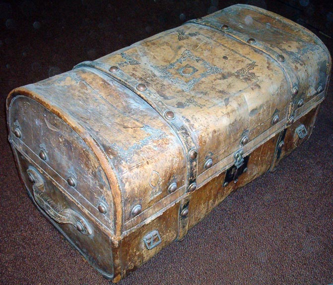
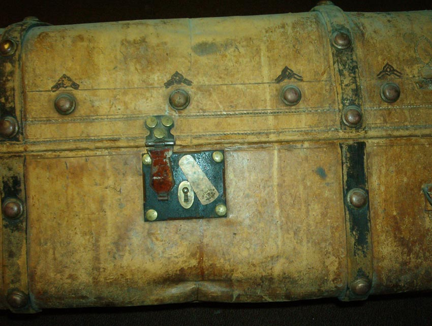
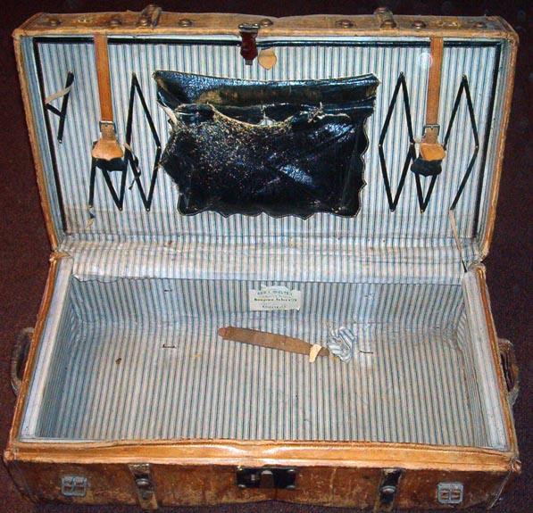
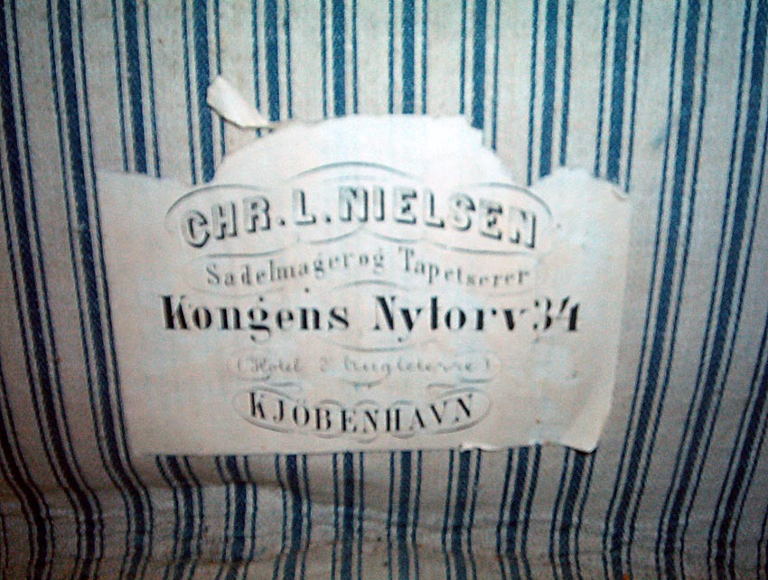
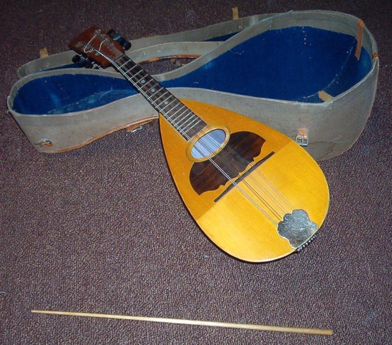
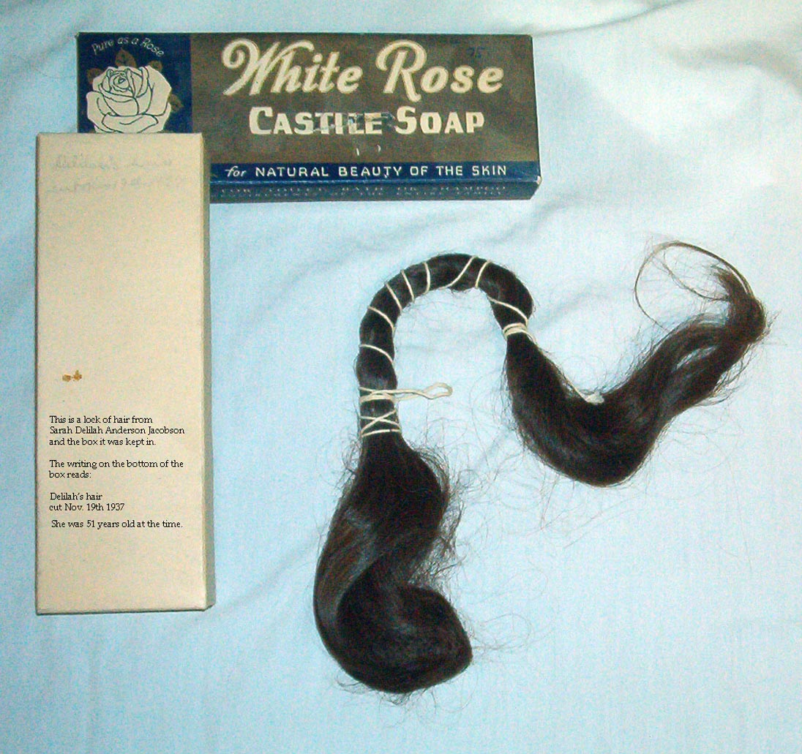

Jacobson/Anderson Family Heirlooms
Home
Histories - - >
Charts
Photos
Maps
Restricted
News
Info
Contact




Ole Hansen Jacobson's mandolin and baton

a lock of hair from Sarah Delilah Anderson Jacobson
